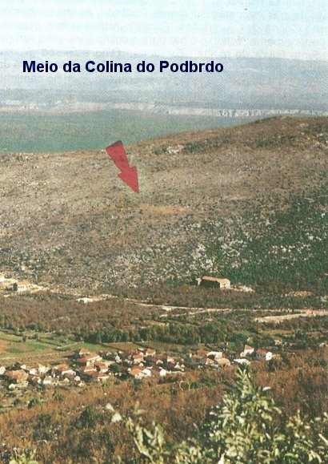
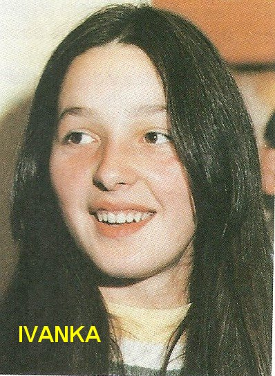
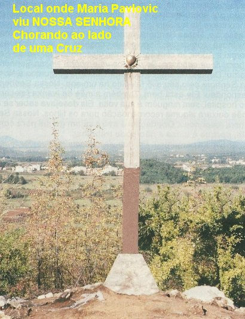
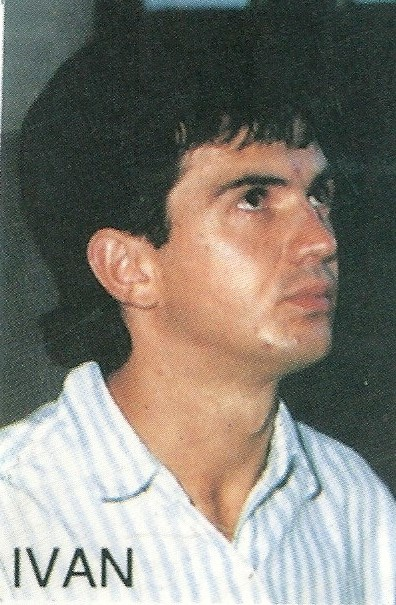

INÍCIO DAS APARIÇÕES
O encontro dos jovens com NOSSA
SENHORA foi de certo modo surpreendente e até incomum, em face da 
Era o dia 24 de Junho de 1981, festa de São João Batista. As duas meninas que primeiro viram a VIRGEM MARIA foram a Ivanka Ivankovic e Mirjana Dragicevic, quando neste dia, passeavam pelas encostas do morro Podbrdo (mais tarde denominado Colina das Aparições). Ivanka exclamou: “Olhe a Gospa!” (Nossa Senhora em croata). Como as duas brincavam, Mirjana pensou que fosse um tipo de brincadeira, nem olhou e correu para casa. Mais tarde se encontraram com Milka, que lhes pediu ajuda para buscar as ovelhas, que deveriam estar nas encostas da mesma Colina. Quando as três meninas se aproximaram da base do morro, viram NOSSA SENHORA a certa distância, mais ou menos na metade da encosta do Podbrdo com o MENINO JESUS ao colo. Elas ficaram assustadas e respeitosamente se ajoelharam. Vicka que procurava as amigas, chegou e viu as três ajoelhadas na base do morro com aspecto de que estavam assustadas, e olhavam fixamente para um mesmo ponto no meio da Colina. Ela como nada via, perguntou de que se tratava? E as colegas responderam que estavam vendo a VIRGEM MARIA! Ela não acreditou e voltou correndo para o povoado, enquanto as três amigas continuaram ajoelhadas, olhando e rezando para aquele vulto de uma linda mulher que estava a certa distância, com uma criança ao colo.
O povoado é muito perto da Colina e, logo na entrada, Vicka viu Ivan Dragicevic e Ivan Ivankovic, colhendo maçãs. Na conversa, ela lhes contou que as três amigas estavam na base do Podbrdo afirmando que viam a MÃE DE DEUS. Como ela estava com medo de permanecer lá, perguntava se eles queriam acompanhá-la. E para lá foram os três e lá encontraram as outras. Em respeitosa atitude também se ajoelharam e então, também puderam apreciar um lindo vulto de mulher com uma criança ao colo, apoiado no braço direito da VIRGEM, que sorria e acenava, convidando os jovens a se aproximarem. Eram seis e meia da tarde e começava a escurecer. Eles ficaram com receio e por isso não atenderam ao convite. A partir deste momento, a Aparição ficou mais um pouco e depois desapareceu.
Euforicamente, voltando para o povoado, descreveram ter visto a “Gospa” que usava um vestido muito lindo, tinha os cabelos escuros e lisos, e sobre a cabeça trazia uma brilhante coroa de estrelas. Na verdade, eles ainda estavam meio assustados, mas muito contentes com o acontecido. Quando chegaram as suas casas, contaram as notícias. Uns acreditaram, outros ficaram indecisos e perplexos. Uns parentes chegaram a insinuar de que se tratava de um Disco Voador.
SEGUNDA APARIÇÃO
No dia seguinte, 25 de Junho de 1981, os jovens acordaram felizes, sorridentes, recordando os fatos ocorridos no dia anterior. E por isso tinham esperança de que poderiam ter a chance de encontrar outra vez aquela maravilhosa Aparição. Como eles trabalhavam na roça para colher folhas de tabaco, naquele dia encerraram o serviço um pouco mais cedo, pois já estava tudo acertado entre eles, para se encontrarem na base da Colina. Assim, Ivanka, Vicka, Mirjana e Ivan Dragicevic chegaram quase ás 6 horas no Podbrdo. Olhando para o alto, de repente viram surgir uma magnífica luz e nela estava NOSSA SENHORA, desta vez sem o MENINO JESUS. Ivanka viu primeiro e exclamou: “Vejam! É NOSSA SENHORA”! As outras duas também viram. Vicka que havia prometido avisar a Marija Pavlovic e Jakov pediu aos companheiros que ali esperassem um pouco enquanto ela ia chamar os outros. E saiu numa disparada, voltando correndo velozmente em companhia dos outros dois.
Fazendo sinal com a mão, a VIRGEM MARIA convidou os jovens a se aproximarem. Eles aceitaram, e rapidamente e com toda energia, subiram o morro em linha reta, na direção da Aparição, não seguiram a trilha sinuosa de pedestre. Embora não vendo NOSSA SENHORA, Marija e Jakov seguiram juntos os velozes passos dos demais. Quando se aproximaram uns dois metros da VIRGEM MARIA, respeitosamente todos se ajoelharam. Emocionados e com lágrimas nos olhos, as crianças começaram a rezar o PAI NOSSO, AVE-MARIA, o GLÓRIA, e ELA carinhosamente, com um maternalmente sorriso, observava os jovens. Depois, pediu às crianças que rezassem o CREDO. A MÃE DE DEUS estava com a face alegre e olhava todos com o mesmo amor e atenção. Ao longo das orações, umas 15 pessoas do povoado, convencidos da presença de NOSSA SENHORA, subiram a Colina que fica bem próxima ao lugarejo e permaneceram junto aos videntes.
Terminada as orações, Ivanka pediu noticias da sua mãe que tinha falecido recentemente. NOSSA SENHORA respondeu:
- “Tua mãe está bem. Ela está Comigo”.
Mirjana na sua simplicidade pediu a VIRGEM MARIA que enviasse um sinal, para que as pessoas acreditassem e não ficassem falando mal delas (das meninas). Nossa MÃE SANTÍSSIMA olhou para ela e naquele exato momento, na vista de todos, os ponteiros do relógio que a jovem trazia, passaram há marcar 3 horas e 15 minutos a menos, quando na realidade já eram praticamente 6 horas da tarde!

- “Permaneçam na paz de DEUS, Meus anjos”!
Eles ficaram ali no mesmo local, com o olhar fixo na direção onde ELA desapareceu. As pessoas presentes nada viram, mas estavam com absoluta convicção de que a MÃE DE DEUS esteve naquele local.
A partir daquele momento, o grupo dos seis videntes ficou completo: Ivanka Ivankovic, Mirjana Dragicevic, Vicka Ivankovic, Ivan Dragicevic, Marija Pavlovic e Jakov Colo.
Nesse dia não estavam presentes Milka, irmã de Marija Pavlovic, que foi a roça terminar um trabalho para a sua mãe, e Ivan Ivankovic, que não quis voltar lá no Podbrdo com “aquelas crianças”. Os dois não mais viram NOSSA SENHORA.
TERCEIRA APARIÇÃO
A notícia das Aparições se espalhou rapidamente, alcançando todos os lugarejos mais próximos. Por essa razão, no dia seguinte, quase três mil pessoas correram ansiosas para a Colina das Aparições (nome dado ao Monte Podbrdo), atraídas pelas descrições dos fatos ocorridos e agora, pelos três sinais luminosos que observaram virem de lá. Esses sinais foram vistos pelos habitantes da Vila e também pelos moradores dos arredores. Os videntes exclamaram: “E’ ELA”! E saíram correndo a toda velocidade, como se tivessem asas, voando por sobre as pedras e os espinheiros da vegetação, para o local onde estava a VIRGEM MARIA. Era o dia 26 de Junho de 1981. Logo se ajoelharam diante DELA. NOSSA SENHORA estava maravilhosa, carinhosa e sorridente, parecia estar muito mais contente. Seguindo o conselho da sua avó, Vicka aspergiu a Aparição com água benta, dizendo: “Se for NOSSA SENHORA, fique conosco. Se não for, vá embora”! (Repetindo o gesto que fez a vidente Bernadette Soubirous, durante as Aparições de NOSSA SENHORA em LOURDES, na Gruta de Massabieille, na França). A MÃE DE DEUS maternalmente sorriu. E então, os jovens rezaram e depois cantaram. Mirjana perguntou a VIRGEM MARIA pelo seu avô, falecido há um ano. ELA respondeu:
- “Ele está bem”.
Também a mãe de Ivanka faleceu no Hospital, sem ninguém ao seu redor. Ela desejava saber se a mãe deixara alguma recomendação para os filhos. ELA respondeu:
- “Obedeçam à avó e sejam gentis com ela, porque é idosa e não pode trabalhar”.
Ivanka perguntou:
- “Por que a Senhora veio aqui? E o que deseja de nós”?
NOSSA SENHORA com muita paz no semblante, carinhosamente olhou para os jovens e disse:
- “Vim porque aqui existem muitos e verdadeiros fiéis. Desejo estar com vocês para lhes deixar mensagens e rezar, com a intenção de converter e reconciliar o mundo inteiro”.
Então Mirjana perguntou:
- “Como é o Nome da Senhora”?
ELA respondeu: 
- “EU sou a Bem-Aventura VIRGEM MARIA”.
As crianças na sua simplicidade e pouca instrução, perguntaram:
- “Porque a Senhora nos escolheu”.
ELA respondeu:
- “EU não escolho as pessoas de mais conhecimento e de muita instrução. Estas já devem ter ou imaginam possuir o necessário e útil entendimento para o bem-viver. As pessoas mais jovens e mais simples estão caminhando agora pela escola do aprendizado e do amor. Por isso escolhi vocês”.
Os jovens ainda perguntaram se ELA retornaria no dia seguinte. NOSSA SENHORA respondeu que “Sim” e acrescentou:
- “Fiquem na paz de DEUS”! E despedindo-SE dos videntes, desapareceu.
A Aparição durou cerca de meia hora.
Depois da Aparição, os jovens continuaram vendo a luz e as estrelas, como se fosse noite, com o dia ainda muito claro. Começaram a descida do Morro. A multidão era muito grande e assediava os videntes, queriam saber tudo que NOSSA SENHORA disse. Marija Pavlovic conseguiu descer na frente com um grupo de mulheres. De repente, pelo meio do caminho, deixou o grupo e rapidamente se dirigiu para o lado esquerdo e caiu de joelhos ao chão, dizendo:
- “Eis NOSSA SENHORA”! Marija Pavlovic viu a VIRGEM MARIA triste, segurando uma Cruz escura, de onde saiam raios coloridos, como um arco-íris, mas sem a presença de JESUS. NOSSA SENHORA estava diante da Cruz e chorava dizendo:
“Paz, paz, paz. Reconciliem-se. É preciso que reine a paz entre DEUS e as pessoas. Por isso é preciso crer, rezar, jejuar e se confessar”.
A cena foi rápida e logo desapareceu.
QUARTA APARIÇÃO
Dia 27 de Junho de 1981, era sábado. A polícia procurava os videntes para interrogatório. Em Citluk, o alto comando comunista começou a ficar preocupado com os acontecimentos e decidiram convocar os jovens para esclarecimentos. Os videntes foram e confessaram sem hesitação que viam e conversavam com NOSSA SENHORA. Os Chefes não aceitaram e acusaram os jovens de doentes ou drogados, e por isso, eles foram encaminhados ao serviço médico para exames. O médico não encontrando neles nada de anormal, esquivou-se da responsabilidade despachando o processo com a frase: “O caso destes jovens não é de minha competência”.

Mal chegaram, Jakov e Marija Pavlovic foram os primeiros a verem a luz brilhar no alto da Colina do Podbrdo e saíram correndo com todo ímpeto. Quem observou aqueles dois correndo afirmou que era uma velocidade incrível, miraculosa. Os Padres ali presentes não conseguiram acompanhá-los de nenhum modo. Quando os jovens chegaram às proximidades de NOSSA SENHORA, bem no alto da Colina, a multidão que era numerosa ainda estava no meio do Morro. Tinha tanta gente, que os videntes não puderam ficar juntos. As pessoas empurravam e se apertavam ao redor dos jovens e no lugar onde imaginavam estar a VIRGEM procuravam tocá-la, evidentemente sem qualquer êxito. E assim, o local da Aparição ficou tão restrito, que Marinko e Mate, protegendo os videntes e o local, fizeram um cordão de proteção, isolando uma área ao redor deles.
O povo estava emocionado e esperançoso de poderem presenciar alguma manifestação sobrenatural. E Vicka, percebendo, pediu a nossa MÃE SANTÍSSIMA que SE mostrasse àquela gente. ELA respondeu:
- “Os que não vêem devem acreditar como se vissem”.
Mirjana falou para a VIRGEM, que as autoridades estavam julgando os jovens videntes como sendo drogados ou epilépticos!... ELA respondeu:
- “Existem e sempre existirão injustiças no mundo. Não se preocupem”.
Perguntaram ao Padre Iozo se ele gostaria de fazer alguma pergunta a NOSSA SENHORA, e ele respondeu:
- “Para mim, não. Mas, desejaria saber se a MÃE DE DEUS tem alguma mensagem para a nossa Paróquia ou para os Padres”?
ELA respondeu: - “Que os Padres creiam firmemente e protejam a fé dos demais”.
Naquele tumultuado momento, causado pela grande multidão de pessoas que vieram presenciar a Aparição, NOSSA SENHORA desapareceu sem se despedir dos jovens. Minutos após, quando desciam a Colina, e as crianças sendo protegidas por umas cinco pessoas, de súbito elas pararam e se ajoelharam exclamando no meio da Colina: “Ei-la”! NOSSA SENHORA tinha voltado e lhes disse:
- “Sejam os Meus Anjos, os Meus queridos Anjos”! Prometeu-lhes voltar no dia seguinte e se despediu:
- “Até logo, Meus Anjos. Vão na paz de DEUS”!
Neste dia, a pedido dos seus pais que estavam preocupados com aquela multidão, Ivan não subiu a Colina com os demais videntes. Sozinho, ajoelhou-se no início da subida e começou a rezar o Terço. NOSSA SENHORA apareceu-lhe com um belíssimo sorriso no rosto, e lhe disse para ficar em paz. A partir deste dia Ivan tomou a decisão de jamais faltar aos encontros com a VIRGEM MARIA. Sua mãe percebendo a tristeza e o desgosto do filho, pela proibição, prometeu-lhe nunca mais impedi-lo de subir à Colina.
Nesses primeiros dias, a MÃE DE DEUS apareceu aos jovens no Podbrdo, em lugares diferentes: ora no cume do Morro, outra vez no meio, assim como em outra área intermediária.